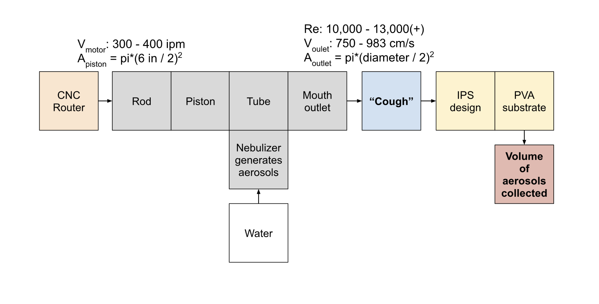
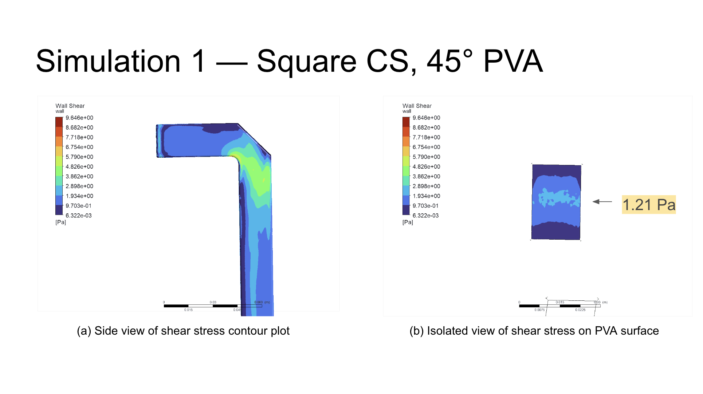
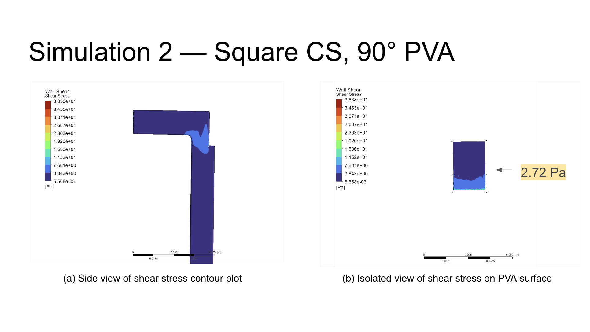
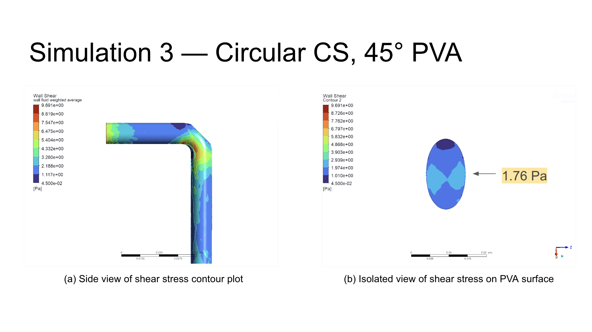
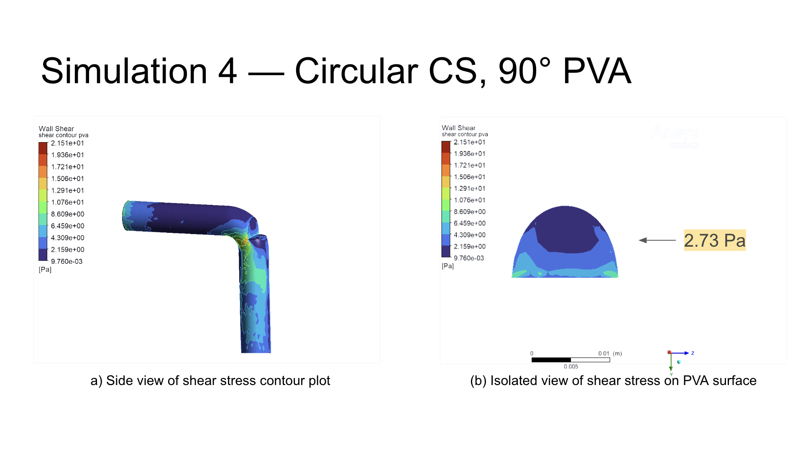
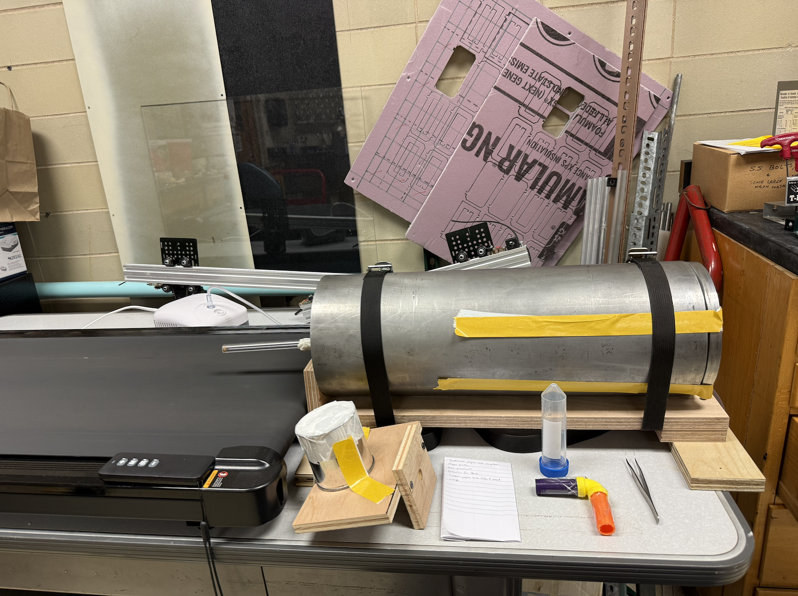
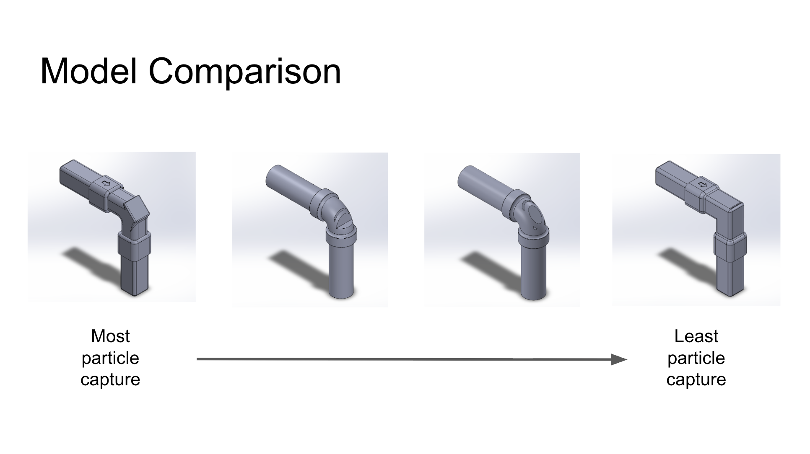
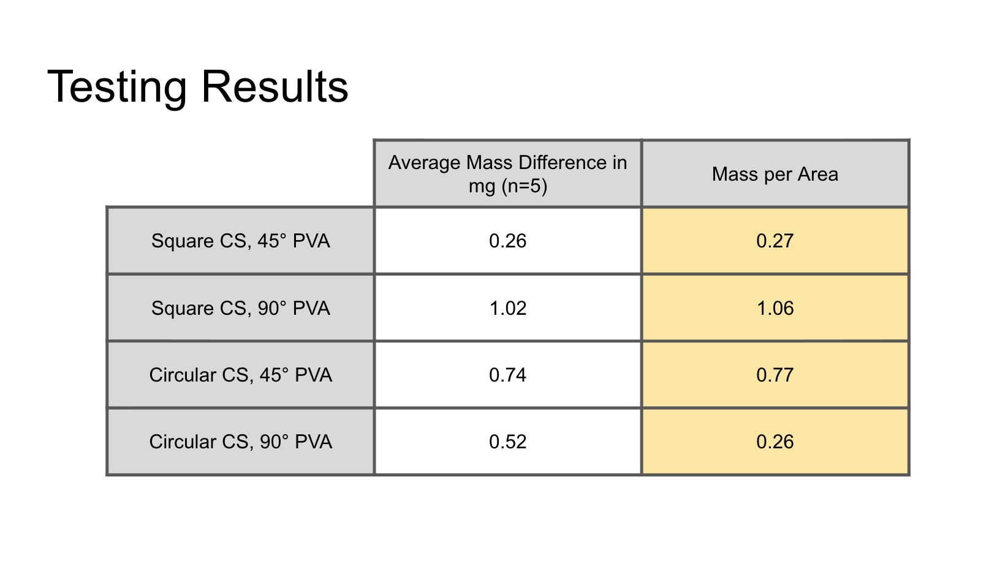

TB Diagnostics Testing
A non-sputum aerosol capture device for tuberculosis screening — optimized via CFD simulations and verified with a custom cough generator test rig in a global partnership across two continents.

Overview
Tuberculosis (TB) remains one of the world's leading infectious diseases, yet many current diagnostic methods rely on sputum samples that can be difficult for patients—especially children and vulnerable populations—to produce. As part of a two-quarter Biomedical Engineering capstone project, our team partnered with researchers and clinicians in South Africa to develop a non-sputum TB diagnostic device capable of capturing aerosolized particles expelled during coughing for downstream PCR analysis.
The project was uniquely structured across two continents, with two team members based in South Africa conducting field research and testing while two team members, including myself, remained on Northwestern University's Evanston campus leading design, prototyping, and validation efforts. My primary role began with conducting literature reviews and investigating how internal device geometry could influence airflow behavior and particle capture. During the second quarter, I transitioned to hands-on development, building and testing physical prototypes, 3D printing design iterations, and constructing a cough generator test rig to experimentally evaluate device performance.
Role
Prototype Testing & Validation Lead
Timeline
September 2025- March 2026
Methods
Computational Fluid Dynamics (CFD), 3D Printing, Test Rig Engineering, Global Co-Design
Collaborators
Northwestern University & South Africa Clinical Partners
The Problem
Current TB diagnostic methods often require sputum samples, which can be difficult to obtain and may delay diagnosis, particularly for pediatric and immunocompromised patients. Our goal was to develop a non-invasive, non-sputum diagnostic approach capable of collecting aerosolized particles containing tuberculosis bacteria during a patient's cough for PCR-based detection.
However, the existing aerosol sampling concept was not capturing enough particles on the collection medium to achieve the desired diagnostic sensitivity. Beyond improving particle capture, the design also needed to address real-world clinical requirements identified through stakeholder interviews in South Africa. The device needed to be:
- Intuitive to use and fully portable
- Lightweight enough for pediatric patients to handle easily
- Completely safe from potential cross-contamination risks
- Capable of collecting sufficient diagnostic samples within only a few coughs
Balancing these user needs with engineering performance created a complex, multidisciplinary design challenge.
Design Process
Fluid Dynamics Analysis & Simulation
The project began with an extensive literature review and background research focused on cough dynamics, aerosol transport, particle deposition, and existing TB diagnostic methods. Using insights from published research, I helped investigate how internal pipe geometry could influence airflow patterns and improve the likelihood of aerosolized particles depositing on a polyvinyl alcohol (PVA) collection surface.
Our team developed several design concepts and evaluated them through Computational Fluid Dynamics (CFD) simulations, comparing different cross-sectional geometries and collection surface orientations to better understand airflow behavior, pressure losses, and particle capture mechanisms.
Experimental Prototyping & Validation
Once promising concepts were identified through simulation, the project transitioned into prototype development and experimental validation. The team created and refined CAD models, 3D printed prototype iterations, and constructed a cough generator testing platform capable of producing repeatable aerosolized flows that mimicked human coughs.

This testing system allowed us to physically evaluate each design configuration and compare real-world performance against our computational predictions. Through iterative prototyping and testing, we gathered quantitative data on aerosol capture performance and identified design tradeoffs between airflow characteristics, manufacturability, and usability.
Globally Distributed Teamwork
One of the most valuable aspects of the project was working within a globally distributed team. While our teammates in South Africa conducted field interviews, observed clinical workflows, and gathered stakeholder feedback directly from healthcare providers and patients, the Evanston-based team translated those insights into engineering requirements and design solutions. This continuous exchange of information ensured that technical decisions remained grounded in real clinical needs rather than laboratory assumptions.
Final Design Features
Optimized Flow Geometry
The final prototype incorporated an optimized internal flow path designed to maximize aerosol deposition onto a removable PVA collection surface while maintaining a compact and user-friendly form factor.




Clinical Workflow Integration
Mechanical design features were carefully developed to support ease of assembly, quick sample collection, and sterile collection-medium swapping within clinical environments.


Cough Generator Testing Rig
The project produced a custom-engineered cough generator testing platform that enabled repeatable validation of prototype performance and established a clear foundation for future optimization and clinical studies. By combining computational modeling with experimental testing, the team developed a data-driven approach for evaluating aerosol capture performance and informing future design iterations.

Outcomes
Testing Outcomes
This project demonstrated the value of combining engineering analysis, rapid prototyping, and user-centered design when addressing complex global health challenges. Through literature-driven design decisions, prototype development, and physical testing, our team evaluated multiple internal geometries to better understand how device design influenced aerosol capture performance.
Preliminary cough generator testing revealed measurable differences in aerosol collection across the four prototype configurations. The Square Cross-Section, 90° PVA design achieved the highest aerosol capture by mass, followed by the Circular Cross-Section, 45° PVA, Circular Cross-Section, 90° PVA, and Square Cross-Section, 45° PVA configurations. These findings provided early validation that internal geometry significantly impacts particle deposition and collection efficiency.
While the results identified promising design directions, they also highlighted opportunities for future development. Additional work could include optimization of internal flow paths through bifurcated geometries, expanded usability testing with stakeholders, refinement of the mouthpiece design, and larger-scale clinical studies to better understand cough variability and factors that may influence sample quality. The testing platform developed during this project established a foundation for future design iterations and clinical validation efforts.


Learning Outcomes
This project demonstrated the value of combining engineering analysis, rapid prototyping, and user-centered design when addressing complex global health challenges. Through CFD modeling, prototype development, and physical testing, our team identified design configurations that improved aerosol capture performance and generated valuable insights for future device development.
Personally, I strengthened my skills in additive manufacturing, creating experimental design, and data-driven decision-making while gaining firsthand experience translating research into functional medical device prototypes.
Beyond the technical outcomes, the project reinforced the importance of interdisciplinary and international collaboration. Working across continents required strong communication, adaptability, and systems thinking to integrate clinical feedback, engineering analysis, and stakeholder needs into a cohesive design. The experience deepened my interest in diagnostics innovation and provided an early opportunity to apply engineering principles to a meaningful healthcare problem with real-world impact.